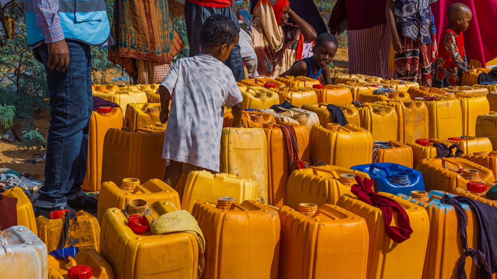

- 50 € : un colis alimentaire qui nourrit une famille pendant un mois
- Équipe soudanaise sur place depuis 1999
- Éligible à la zakat · reçu fiscal immédiat, 66 % déductible
La situation au Soudan aujourd'hui
La guerre qui oppose l'armée soudanaise et les Forces de soutien rapide depuis avril 2023 a vidé Khartoum et ravagé le Darfour. Les combats se poursuivent autour d'El-Fasher et dans le Kordofan. Les familles arrivent dans l'est du pays sans ressources, après des semaines de route, en pleine saison des pluies, avec des épidémies de choléra dans les camps.
Le besoin le plus urgent : la nourriture, l'eau propre et la prise en charge de la malnutrition des enfants. Les prix de la farine et de l'huile ont triplé en deux ans sur les marchés de Kassala. C'est une crise silencieuse : elle fait peu de titres, et nos équipes manquent de moyens au moment où les besoins sont les plus grands. Cette page est mise à jour chaque mois.

Urgence Soudan
50 € vous coûtent 17 € après réduction d'impôt de 66 %.
Je donne pour le SoudanÉligible à la zakat · reçu fiscal immédiat · paiement sécurisé
Comment l'aide arrive-t-elle au Soudan ?
Muslim Hands est présente au Soudan depuis 1999, avec un bureau à Khartoum replié à Port-Soudan depuis 2023 et une équipe entièrement soudanaise. Les denrées sont achetées sur les marchés du pays quand les stocks le permettent, ou importées par le port de Port-Soudan, puis acheminées par la route vers Kassala et Gedaref. Les distributions se font dans les camps et les sites d'accueil, sur listes établies avec les comités de déplacés.
Collecte en France
Votre don rejoint le fonds Urgence Soudan, tracé séparément. Les dons zakat sont fléchés vers les bénéficiaires éligibles.
Achat
Farine, lentilles, huile, sucre et savon achetés à Port-Soudan ou à Kassala, ou importés quand les marchés sont vides.
Distribution
Colis mensuels, eau par camion et dépistage nutritionnel dans les camps, par notre équipe soudanaise.
Compte rendu
Listes, photos et factures remontent à Paris ; le bilan est publié dans les actualités et le rapport annuel.

Ce que fait Muslim Hands sur place
Colis alimentaires mensuels
Farine, lentilles, huile, sucre et sel pour une famille pendant un mois, dans les camps de Kassala et de Gedaref.
Eau potable
Eau par camion-citerne et réhabilitation de six points d'eau dans les sites d'accueil.
Hygiène et choléra
Kits d'hygiène, savon, pastilles de chloration et séances de prévention du choléra.
Nutrition des enfants
Dépistage de la malnutrition et compléments nutritionnels pour 2 400 enfants suivis.
Orphelins déplacés
Soutien aux enfants qui ont perdu leurs parents dans la guerre, logés dans leur famille élargie.
Après l'urgence
Semences et petit élevage pour les familles qui s'installent durablement dans l'est.
Que finance mon don pour le Soudan ?
Les montants ci-dessous sont nos coûts réels d'achat et de distribution à Kassala, revus chaque trimestre.
| Don | Ce qu'il permet | Fiche |
|---|---|---|
| 25 € | Un kit d'hygiène pour une famille : savon, chloration, seaux | Donner |
| 50 € | Un colis alimentaire pour une famille pendant un mois | Donner |
| 100 € | De l'eau potable pour dix familles pendant un mois | Donner |
| 250 € | Le suivi nutritionnel de dix enfants pendant trois mois | Donner |
| 39 € / mois | Le parrainage d'un orphelin déplacé | Parrainer |
Pour un geste qui dure, un puits dans un site d'accueil de Kassala donne de l'eau aux déplacés et aux habitants pendant vingt ans.
Bilan chiffré depuis 2023
Depuis le début de la guerre, le fonds Urgence Soudan a financé 18 000 colis alimentaires, la réhabilitation de six points d'eau, le suivi nutritionnel de 2 400 enfants et des distributions de kits d'hygiène dans trois villes : Port-Soudan, Kassala et Gedaref. Les comptes de la campagne sont détaillés dans le rapport annuel.

« Nous avons marché douze jours depuis Khartoum. Le colis, c'est la première fois que mes petits-enfants mangent à leur faim depuis des mois. »Fatima, grand-mère de cinq enfants, camp de Kassala, août 2026
Votre don pour le Soudan et vos impôts
Muslim Hands France est une association d'intérêt général : votre don pour le Soudan ouvre droit à une réduction d'impôt sur le revenu de 66 %, dans la limite de 20 % du revenu imposable. 50 € vous coûtent 17 €, 150 € vous coûtent 51 €. Le reçu fiscal est envoyé par e-mail immédiatement après le paiement. Votre don peut aussi être votre zakat al maal. Tout savoir sur la déduction fiscale.

Questions fréquentes sur le don pour le Soudan
Où intervenez-vous au Soudan ?
À Port-Soudan, Kassala et Gedaref, dans l'est du pays, où arrivent les déplacés de Khartoum et du Darfour. Le bureau Muslim Hands du Soudan est présent depuis 1999, avec une équipe soudanaise.
Que finance mon don pour le Soudan ?
25 € un kit d'hygiène pour une famille, 50 € un colis alimentaire pour un mois, 100 € de l'eau potable pour dix familles pendant un mois, 39 € par mois le parrainage d'un orphelin déplacé.
Comment l'aide arrive-t-elle au Soudan ?
Par Port-Soudan, seul grand port du pays resté accessible, puis par la route vers Kassala et Gedaref. Nous achetons la farine, les lentilles et l'huile sur les marchés soudanais quand les stocks le permettent.
Mon don pour le Soudan est-il déductible des impôts ?
Oui, à 66 % de son montant, dans la limite de 20 % du revenu imposable : 50 € vous coûtent 17 €. Le reçu fiscal est envoyé immédiatement par e-mail.
Puis-je donner ma zakat pour le Soudan ?
Oui. Les familles déplacées et les victimes de la famine font partie des ayants droit de la zakat. Cochez la case « Zakat » lors du don.

De l'eau propre, contre le choléra.
100 € donnent de l'eau potable à dix familles pendant un mois dans les camps de Kassala.
Offrir de l'eau potable